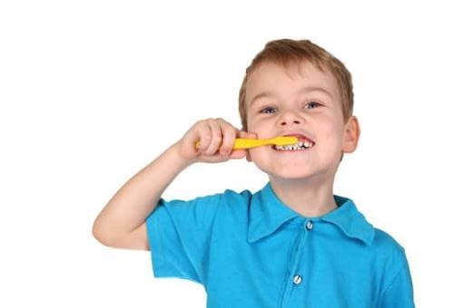
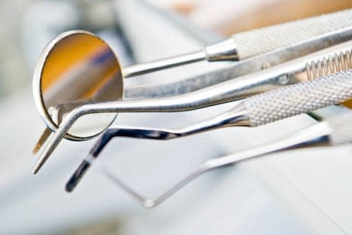
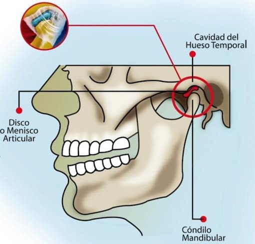
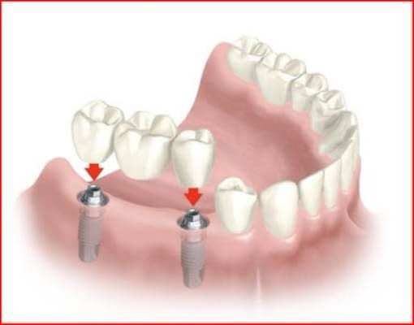
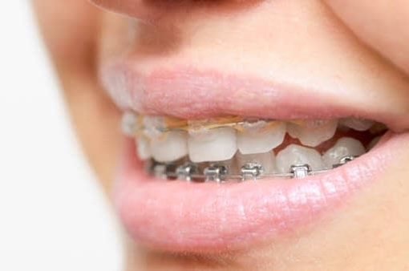
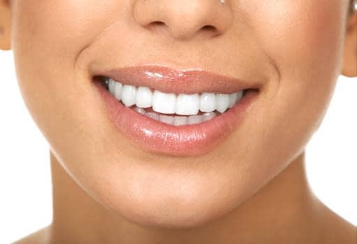
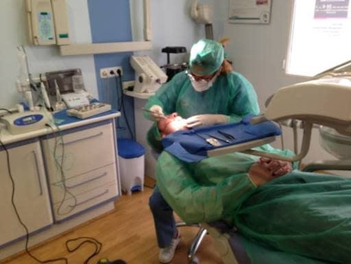
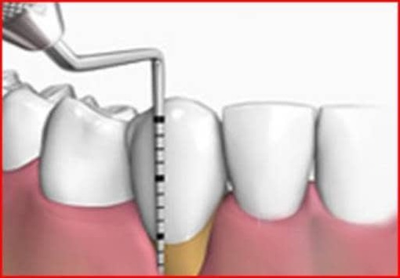
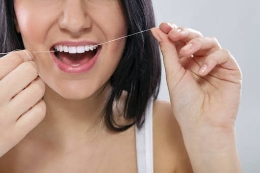

Odontopediatría
La Odontopediatría es la especialidad de la Odontología encargada de la prevención, diagnóstico y tratamiento de los niños desde la infancia más temprana hasta finalizar su crecimiento. El Odontopediatra es el encargado de examinar la boca del niño y de promover unos hábitos de higiene bucodental...
Leer más
Medicina Bucal
La Medicina Bucal es la parte de la Odontología que se encarga de la prevención, el diagnóstico y tratamiento de todas aquellas enfermedades orales y sistémicas que puedan tener manifestación en la cavidad oral y sus tejidos anejos. Uno de los objetivos primordiales es el diagnóstico precoz del cáncer oral...
Leer más
Patología Articular
A grandes rasgos la patología de la articulación témporo-mandibular (ATM) puede dividirse en tres grandes grupos: El dolor miofascial, el síndrome de disfunción témporo-mandibular, y un tercer grupo de procesos múltiples (artrosis, luxación, neoplasias, infecciones...). El bruxismo es una parafunción muy frecuente...
Leer más
Prótesis
La prótesis dental fija sobre implantes es un tratamiento mediante símiles dentarios fabricados a medida que se cementan o atornillan a los implantes para reponer dientes. Proporcionan una masticación casi natural, un habla y una estética muy adecuada. También disponemos de prótesis removible y fija sobre dientes naturales...
Leer más
Ortodoncia
La ortodoncia es una especialidad de la odontología que se encarga de la corrección de los dientes y huesos posicionados incorrectamente. Los dientes en mala posición son difíciles de mantener limpios y ocasionan una tensión extra sobre los músculos que puede generar dolores de cabeza y síndrome de ATM...
Leer más
Estética Dental
La Odontología estética ha ganado gran auge en los últimos años, debido a la importancia que la imagen tiene en la sociedad, y cómo esta imagen condiciona la autoestima y la calidad de vida de las personas. Nos gusta sentirnos bien, con sonrisas agradables y armónicas que irradien salud y bienestar...
Leer más
Cirugía e Implantes
Cuando perdemos uno o varios dientes perdemos función y estética. Los implantes sirven para reponer los dientes perdidos y restituir las cualidades de la boca, sin "tocar" otros dientes. El implante se coloca con una simple intervención quirúrgica indolora y bajo anestesia local con una tasa de éxito cercana al 98%...
Leer más
Endodoncia y Odontología Conservadora
La Endodoncia es la eliminación del paquete vasculo-nervioso dental y la sustitución mediante un material biocompatible, cuando a consecuencia de un problema infeccioso, caries o traumático, este se ha afectado irreversiblemente. La realización por un especialista aumenta el porcentaje de éxito...
Leer más
Periodoncia
La Periodoncia es la especialidad médico-quirúrgica de la odontología que estudia la prevención, diagnóstico y tratamiento de las enfermedades y condiciones que afectan a las encías y a los tejidos de soporte que rodean a los dientes. Para que los dientes se mantengan sanos, es esencial que las encías estén sanas...
Leer más
Profilaxis Dental
La profilaxis dental, también conocida como "limpieza profesional", es el procedimiento odontológico de mayor importancia para la prevención de algunas enfermedades bucodentales. Es muy importante acudir 1 o 2 veces al año para realizar este tratamiento que le evitará problemas a largo plazo...
Leer más